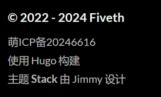
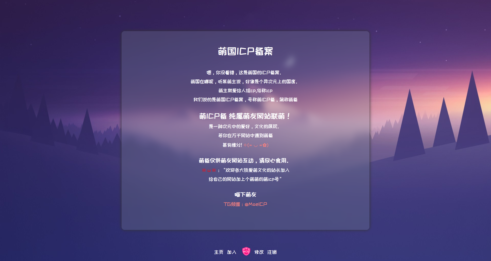

逛博客
首次编辑：2024/8/14/18:37
最后编辑：2024/8/14/
这次博客升级，因为有很多地方需要参考，所以翻出了在自己收藏夹里的一些个人博客。
博客改造完之后，因为忙了挺久（严格说其实就一天差不多），不太想继续琢磨什么，就想着逛逛那些在这两天发现的博客。
我发现很多有趣的东西都在个人博客里，博主们在博客里分享自己的见闻、想法、心情。在这些不起眼的角落里，互联网的身影显得有些陌生。
很多博主都特别优秀，特别是江苏省的那些，他们居然小学六年级就开始上编程启蒙课（scratch）了，而在我的省份，编程的出现还得到高中数学课上的伪代码（忘了是什么内容涉及到的伪代码了），而对于大多数人来说，高中数学都是避之不及的东西，更别说在数学课本中出现的东西了。而他们小学六年级的编程启蒙课学的是游戏，这对于小学生得有多大吸引力呀。
十年之约
在我的收藏里，有一个网站叫优秀个人独立博客导航[十八年]，我一开始在里面很随缘的点哪看哪。后来滑到底部，看到了一条链接叫十年之约，网站里有句话：十年之约，即从加入这个活动起，我们的博客十年不关闭，保持更新和活力! 加入十年之约的博主有很多，于是我开始在这里面随缘逛站。
萌国ICP备案
逛到一个叫fziveth的博主的时候，看到底部的备案信息，但仔细一看，发现这个备案的名字居然是“萌ICP备”。

于是我点开了它，看着还真像那么回事，逗死我了。

开往
另外我还发现很多博客里都有一个叫“开往”的按钮，点击之后会随机带你到另一个人的博客，它的性质大概也和十年之约、萌国ICP备案相似。
互联网档案馆
在那位六年级就上编程课的同学1的师兄2的友链3那里看到了一篇文章叫《“开往”，她将被我开向何方？》，通过文章中的介绍得知，博主居然接手了“开往”这个这项目。然后评论里有一条评论打趣道“往哪开？那肯定是开进互联网档案馆😂”，博主对此的回应是
噗
基本上每个网站的归宿都是互联网档案馆
只是希望开往的那天会晚点到来
我不禁好奇起这个所谓的“互联网档案馆”是何物起来。
访问需要魔法。
这一查还真发现了个神奇的网站，它专门用于保存互联网上的各种信息，包括网站、视频、音频、图片、书籍……于是我试着玩了一下。
这是14年的B站，看起来和今天差距很大。

15年的时候，就已经有现在版本的味道了。


然后看了一下以前的qq空间。


还有qq.com这个域名。

果然还是看记忆里的东西是最有趣的。